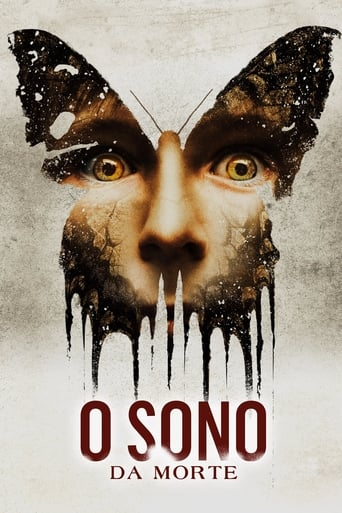
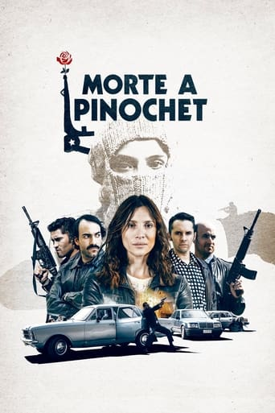
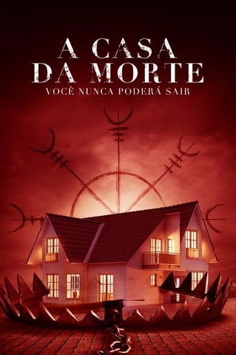

"V de Vingança" (ou "V for Vendetta" no título original) é uma obra de ficção que se passa em um futuro distópico no qual a Inglaterra está
sob o regime totalitário de um governo fascista. A trama gira em torno de um misterioso vigilante conhecido apenas como V, que usa
uma máscara de Guy Fawkes e uma série de atentados para derrubar o regime opressor.
V busca justiça e vingança pessoal contra aqueles que o torturaram no passado, ao mesmo tempo em que inspira o povo a se rebelar
contra a tirania. A história é uma combinação de ação, drama e crítica social, explorando temas como liberdade, identidade e
resistência contra a opressão. A narrativa é tanto uma crítica ao autoritarismo quanto um exame da moralidade e
da justiça individual.
O Sono da Morte

Sinopese:
Logo após perder o filho pequeno, o casal Jessie e Mark (Thomas Jane) aceita adotar Cody. O filho adotivo
se adapta bem à nova família, mas ele tem um problema: os seus sonhos se tornam realidade, e os pesadelos,
especialmente, podem ser mortais.
Morte a Pinochet

Sinopese:
Chile, setembro de 1986. Tamara, comandante do grupo guerrilheiro comunista Manuel Rodríguez Frente Patriótica,
e seus camaradas de luta se preparam para derrubar o regime militar instalado em 1973. Seu plano
é matar o ditador Augusto Pinochet
A casa da morte

Sinopese:
Grupo de limpeza de cenas de crime luta para escapar de uma casa em que um brutal assassinato
aconteceu, depois de ficarem presos ali por um antigo demônio nórdico que está determinado a deixá-los loucos.